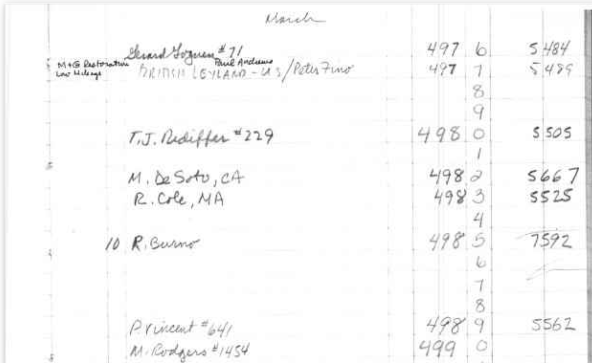
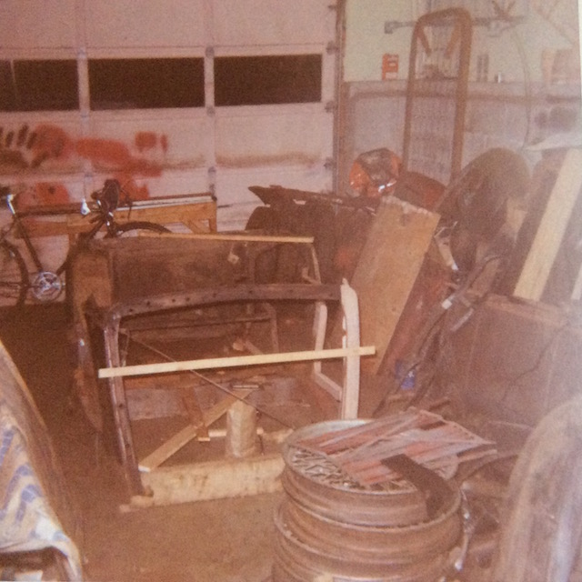
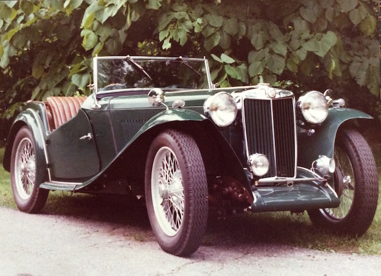
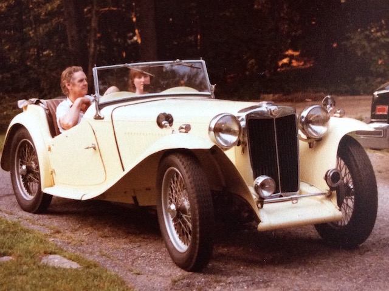
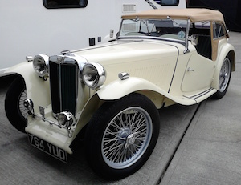

The History of MG TC4985
This page documents the history of MG TC4985 as far as I know it. When purchased, I only knew that it had spent most of its life in the USA, being brought back to the UK in around 2010. The documentation only covered the period in the UK and so only covered the then owner and the previous owner.
The MG Car Club 'Factory Production Records' show TC4985 as having engine number XPAG 5506, which is consistent with other TCs with similar chassis numbers. But TC4985 has engine number XPAG 7592. The assumption was therefore that the engine had been changed at some time in the car's history. However, in June 2024 a member of the mgtabc forum uploaded what he described as "a horrible scan of the production records transcribed by Dick Knudson while he was at the factory in the 60s." Within that (on page 149) TC4985 is listed as having engine number XPAG 7592. Since TC4985 was never registered in the UK and is said to have been exported to the US, the only conclusion I can draw is that the engine in TC4985 was changed before it left the factory. Therefore the car has its original engine.
| 10th March 1948 | Manufactured in Abingdon, UK |
| 1948 to early 1970s | ? |
| Early 1970s | Ronald Durno, Trumbull, Connecticut, USA.
On the 21st July 2015 I updated the MGCC T-Register (http://www.mgcc.co.uk/t-register/) with details and a photo. They replied with a reference to an entry in an early issue of the New England MG T Register magazine, The Sacred Octagon. They said that in 1973 a Ronald Durno of Trumbull, California had registered the car. The next day, a Jan Hurd (of the Registrar of the New England MG T Register) told me that in 1973 the car was registered to Ronald A Durno of Trumbull, Connecticut (not California). It was later registered to George Mayfield, but they have no date or address. He was not active in the club after the early 1990s. They said that the car may have a small brass plate with the NEMGTR number 3733 (but it does not). I found reference to a Ronald Arthur Durno at 14 Meadow Street, Kent, Connecticut 06757-1329. Now 88 and formerly of Trumbull, CT. So I wrote to Ron Durno on 24th July and received an e-mail from him on August 3rd, starting "What a nice surprise." It seems that he bought the car as a collection of bits, after the previous owner gave up on a restoration, and put it back together. It seems that the car was originally green with red upholstery! Although it looks from the photographs as though it had been taken back to bare metal during the restoration. (The T-Register record gave the colour as cream/red.) However, Ron saw another car painted cream and so decided to change the colour. Unfortunately Ron has no records of his period of ownership of the car apart from a few photos of the pile of bits in his garage and of it in its green and cream paintwork. He had them scanned and sent them to me, but he can't remember the dates or to whom he sold the car and when. However, it turned out that he is English, having been born in Bournemouth and migrating to Wichita, Kansas in 1957 to work for the Cessna Aircraft Company. It also transpires that he is a radio control model aircraft enthusiast! Ron was kind enough to send me two MG manuals from the time that he owned the car. |
| ? to early 1990s | George Mayfield, USA. (According to the New England MG T Register.) |
| Early 1990s to 2002 | ? |
| 2002 to 2010 | Garth Pusey, New Jersey, USA
Until 2011 Garth Pusey was selling MG part on The MG Experience forum site. However, a number of posts around that time suggest that Garth was not a reputable dealer and he seems to have stopped advertising parts (at least under that name). I tried contacting him via the MG Experience, but his inbox on the site was full and would not accept any new messages. At the end of December 2017 I found a message on the MG Experience from a Garth Pusey, saying that he had sold a TC to Terry Bone, so I sent him a message, to which he replied. He said that in 2002 he bought TC4985 from a garage called Paramus Auto Collision in Hasbrook Heights, New Jersey, (which was now out of business) with the intention of restoring it. He rebuilt the engine and had the radiator shell re-chromed, but didn't do any more. Then in 2010 he advertised it on Craigs List to find out what it might be worth and, to his surprise, Terry Bone offered him the asking price. He said that he didn't want to sell it, but he had been told about a 47 TC, that was in good condition, so he bought that. |
| ~November 2010 | Terry Bone
This MG TC is an ideal restoration project being that the chassis (chassis number TC4985) is basically sound and has virtually all its major parts still attached to the chassis. The previous owner has informed me that the engine, although looking somewhat dirty has actually been extensively restored. Insofar as the body is concerned, the front and rear wings, petrol tank, bonnet and front apron are all in re-usable condition, the body tub however requires attention. It also appears that some of the chrome work has been either re-chromed or refurbished, including the radiator shell, head lights and sidelights. There is a good set of 19" wheels with the MG with some good tyres. The MG is being offered for sale without any identification papers (log book) but these will be available on completion of the restoration when the MG has a valid MOT. |
| November 2010 | Alan Sinclair, Peacehaven, East Sussex. I spoke to Alan on 21st August 2015. He is now 78 and now lives in Seaford. He bought the MG from Terry Bone. Alan said that by the time he had finished working on the car he had put on some weight and could no longer get behind the wheel! So he sold it. Subsequently he has lost weight and the week before I spoke to him he had bought a TA! |
| 1st August 2011 | Date of first registration in UK (according to V5C document) |
| 2012 to May 2013 | The Real Car Company, Bethesda, Gwyneth
Recent renovation work on this car by the previous owner has included various mechanical attention, many new items including stainless steel exhaust system, brake master cylinder, etc, etc, as well as cosmetic detail such as new, correct bonnet catches, door handles, etc. Nicely re-upholstered in green leather, using a correct specification re-trim kit. We are about to re-finish the wheels in silver, fit new tyres and tubes, and generally prepare the car. A good, clean, useable example, offered MoT tested.They sold it in 2012. (See http://www.classiccars.co.uk/mg/tc/advert/11689# and http://www.realcar.co.uk/cars_sold_2012.htm) It had what looks like a brushed aluminium instrument panel, a wood-rimmed, three-spoke steering wheel and wing mirrors. You can also see that under the wings is black (underseal?). The petrol tank ends appear to be completely painted (as now), but the hood, whilst tan in colour, does not appear to be the present one. One photo shows the wheels as being red. Thus the comment in the advertisement about painting them silver. You can see that the fog lamp and horn are not original, but I can’t tell if the headlamps are right (Chris Hall replaced them). Alan says that he had it resprayed and a new hood and side screens fitted. |
| Another dealer in Kent from whom Chris Hall bought it. | |
| 3rd May 2013 |
Chris Hall, Little Clacton, Essex, UK. In June 2015 Chris advertised the car on the Octagon Club web site (and in their Bulletin) as: MG TC 1948. Chassis no. TC 4985. Finished in sequoia cream with new shires green leather upholstery. New tan double duck hood and side screens. Correct headlamps and fog light, new wiring loom fitted. Many other items replaced in order to make this a very attractive and much admired TC. £24,995. In addition to fitting a new wiring loom to the TC, Chris had it converted to negative earth. He had also fitted flashing indicators in the side lights and rear indicator lights fixed to the luggage rack. He found that a lot of parts were not original TC but had been replaced with TD parts. Chris said that the car has a TD engine (still an XPAG) and it has abnormal air filters. However, the engine number indicates that it is in fact a TC engine, falling somewhere between TC7014 (XPAG 7439) and TC7025 (XPAG 7761). Chris removed under seal and painted the chassis with dark green Hammerite. He also said that he had it resprayed from white to sequoia cream, replaced headlights, fog light, speedo and rev counter and had a new hood and side screens made. |
| 20th June 2015 | David James, Bramber, West Sussex, UK. But since May 2019 resident in Steyning, following downsizing. |
 Terry is a dealer in pre-1956 MGs and is based in North Chailey, East Sussex, although at this time he may have been based in Steyning, West Sussex. He told me that he imported TC4985 from the US some time in 2010, buying it from Garth Posey, then selling it to someone in Peacehaven, but did not have the dates. The description on his web site stated:
Terry is a dealer in pre-1956 MGs and is based in North Chailey, East Sussex, although at this time he may have been based in Steyning, West Sussex. He told me that he imported TC4985 from the US some time in 2010, buying it from Garth Posey, then selling it to someone in Peacehaven, but did not have the dates. The description on his web site stated:  Alan Sinclair said that he sold the TC (and an MGA) to The Real Car Co. in South Wales in part exchange for a Rolls Royce. Actually they seem to be in North Wales. Anyway, they advertised TC4985 for £22,500 as:
Alan Sinclair said that he sold the TC (and an MGA) to The Real Car Co. in South Wales in part exchange for a Rolls Royce. Actually they seem to be in North Wales. Anyway, they advertised TC4985 for £22,500 as:© David James 2024 Last updated: 25th June 2024